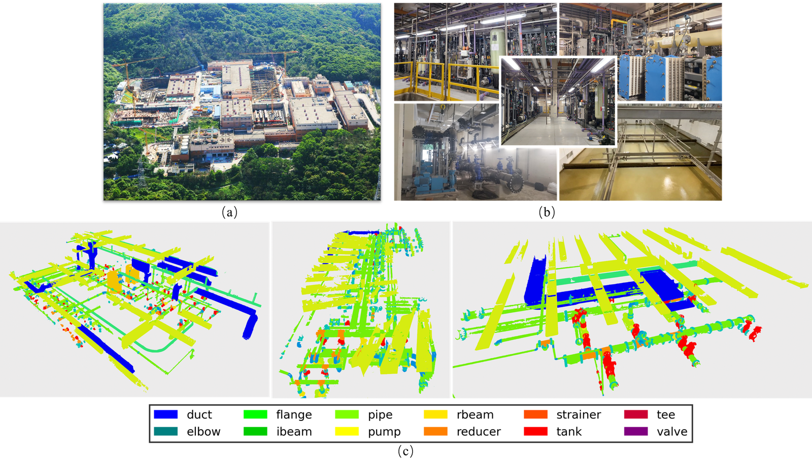
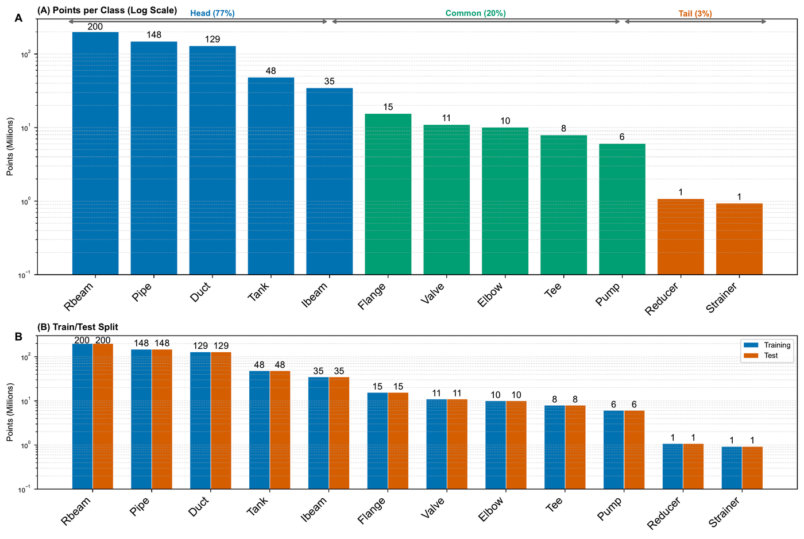
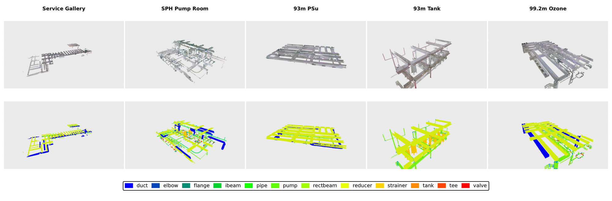
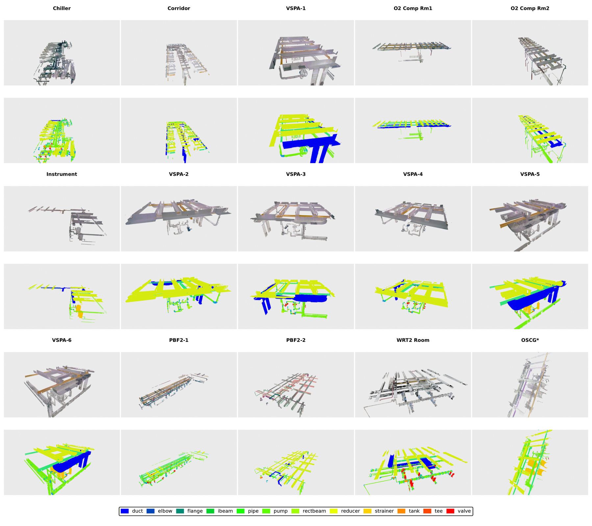

612.7 million expert-labeled points from 20 room scenes, 13 areas, and 7 operational water treatment facilities — the largest publicly available industrial MEP dataset.
Classes organized by frequency tier. Tier 1 dominates 77% of labeled points; Tier 3 spans 7 classes totaling only 3%.

⤢ Click to enlargeAll 12 semantic classes illustrated with representative point cloud examples at 6 mm TLS resolution.
Long-tail class distribution with a 215:1 head-to-tail ratio — 3.5× more severe than S3DIS.

Long-tail distribution of 612.7M labeled points across 3 tiers. The 215:1 head:tail ratio drives the dual crisis.
| Total labeled points | 612.7 M |
| Raw scan points | 2.3+ B |
| TLS resolution | 6 mm @ 10 m |
| Ranging accuracy | 4 mm @ 10 m |
| Point attributes | XYZ + RGB + I |
| Annotation effort | 754 person-hours |
| Class imbalance ratio | 215 : 1 |
| Scale vs. closest MEP | 6.6× larger |
Captured using a Leica BLK360 terrestrial laser scanner in operational water treatment facilities in Hong Kong. Each room was scanned from multiple stations (2–8 per room) to minimise occlusion. Raw scans were registered using Leica Cyclone, then merged and manually annotated in CloudCompare.
20 unique rooms across 13 areas. 4 representative scenes shown with ground-truth annotations. Click any image or video to view it full-screen.

Scene gallery: 4 representative rooms showing annotated point clouds from training and test areas.

Additional scenes from the dataset showing the diversity of industrial environments across the 13 areas.
Area-based splits following S3DIS convention to prevent data leakage between rooms of the same facility.
| Split | Areas | Points | % Total | Description |
|---|---|---|---|---|
| Train | 1, 2, 3, 4, 5, 7, 8, 10, 11, 13 (10 areas) | 527.8 M | 86.1% | Primary training set. Includes the largest area (Area 2, 79.6M pts). |
| Val | 9 (OSCG) (1 area) | 15.1 M | 2.5% | Validation area used for hyperparameter tuning. |
| Test | 6 (93m Psu/VSPA-1) + 12 (SPH) (2 areas) | 84.9 M | 13.9% | Held-out test set. Evaluated via vote-based smooth testing (test_smooth = 0.95). |
Mean Intersection over Union (mIoU) across all 12 classes. Vote-based evaluation with test_smooth = 0.95 is the standard protocol. Per-class IoU is reported for all 12 classes to expose failure modes on tail classes (Reducer, Strainer, Pump, etc.).
The dataset will be provided in two formats:
.txt — space-delimited: X Y Z R G B label per point.ply — binary PLY with vertex attributes: x y z red green blue labelLabels are integer class IDs (0–11) matching the order: Duct, Elbow, Flange, IBeam, Pipe, Pump, RBeam, Reducer, Strainer, Tank, Tee, Valve.